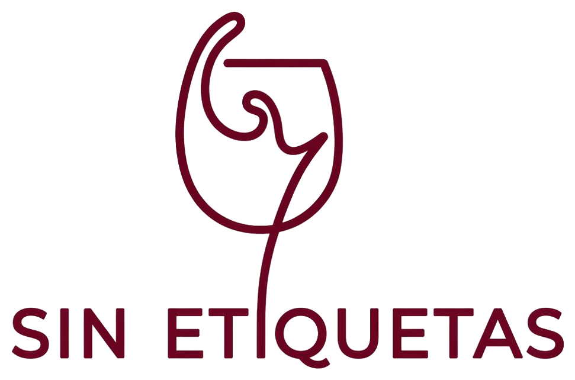
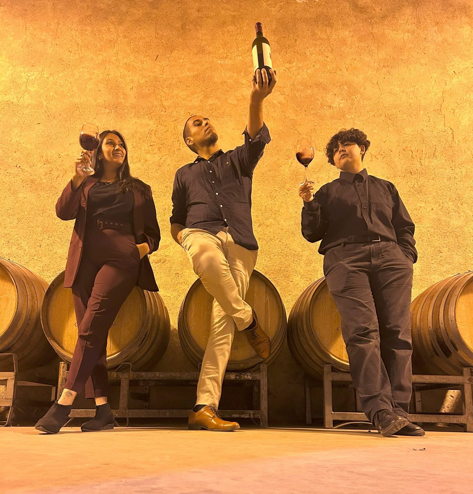
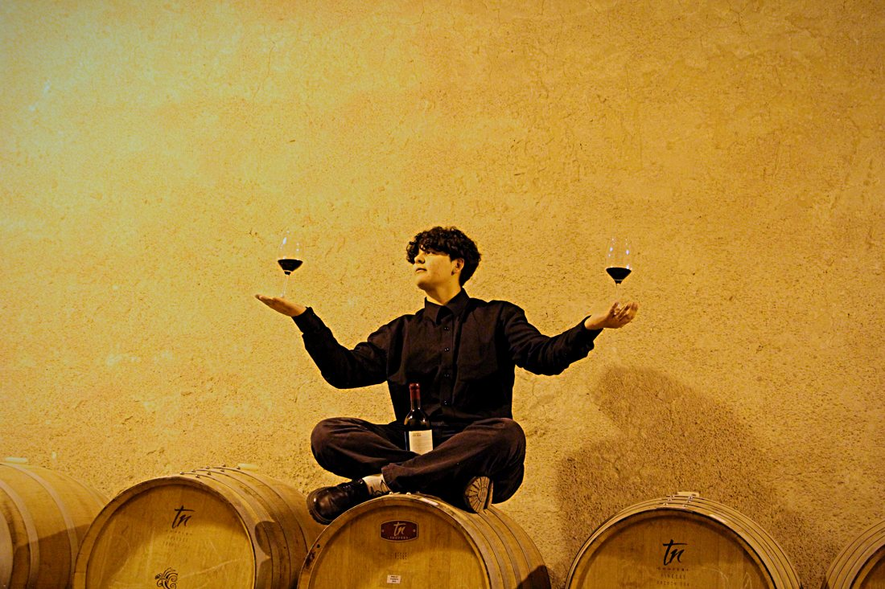
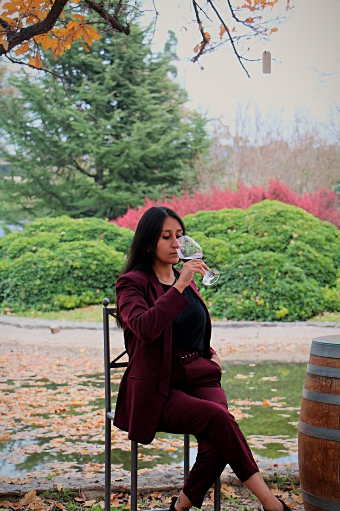
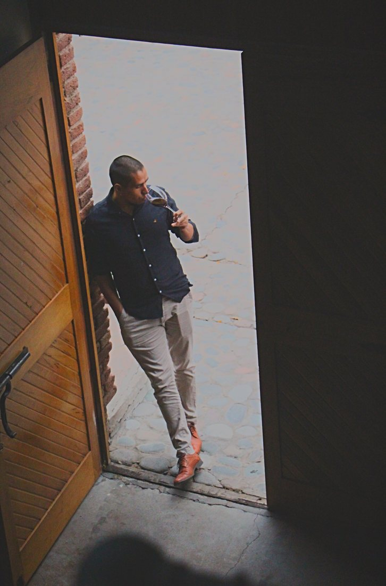

01
Autenticidad
Nada de poses ni carteles de “el sommelier dice”. Jugamos, olemos cosas raras, maridamos lo que nadie maridaría. Y si funciona… funciona.

Catas nómades — Mendoza
Un patio de juegos para el vino y los sentidos. Probás, te reís, aprendés sin darte cuenta. Cada copa, una invitación a curiosear.

Cata en vivo · MendozaAcá no hay expertos. Hay curiosos que brindan.
01 Qué somos
El vino se vive con humor sutil y cercanía mendocina. Contamos historias antes que puntuaciones. Venís a explorar, no a rendir un exámen.
Nada de poses ni carteles de “el sommelier dice”. Jugamos, olemos cosas raras, maridamos lo que nadie maridaría. Y si funciona… funciona.
No te explicamos el vino: lo probamos con vos. La diferencia importa.
¿A qué te recuerda este vino? No hay respuesta incorrecta. Esa pregunta es el juego, y el aprendizaje viene de regalo.
Pocas copas, bien elegidas, con algo rico al lado. Sin relleno, sin postureo, con intención.
02 Quiénes somos
Sommeliers, enología, turismo y alguien del mundo tech que asegura que lo que prometemos se sostiene de punta a punta.

Haise · sommelierSommelier · enología y gastronomía
Le huyo al decanter y tengo un talento natural para dejar las copas chuecas en la mesa. Pero que no te engañe mi falta de protocolo: mi paso por la gastronomía y mis estudios como sommelier me enseñaron que el respeto por el vino no está en las formas, sino en el disfrute.
Soy Haise, tu guía de confianza para hablar de maridajes increíbles, cepas y buenos momentos, sin nada de esnobismo.

Daiana · hospitalidadGerente de hospitalidad · sommellierie y restauración
Hola! Soy Daiana. Mi mundo es la hospitalidad, el turismo y la restauración, pero en Sin Etiquetas dejo el traje de gerente en la puerta y soy la que acomoda las copas chuecas.
Siempre sentí que el vino se entiende mejor desde las emociones que desde la teoría. Por eso me gusta crear experiencias relajadas, donde cada persona pueda conectar el vino con algo propio.
Acá no hay respuestas correctas: si un vino te recuerda a frutas rojas, espectacular. Y si te recuerda al perfume de tu ex tóxico… también sirve.

Walter · techApasionado del vino · Spec Developer (SDD)
Hola! Soy Walter. Mi mundo es el turismo y mi combustible el buen vino. Y, por alguna razón que todavía estoy procesando, me volví el nerd tecnológico del grupo. Mientras las chicas se pierden en la magia de los viñedos, debates infinitos sobre terroir y maridajes del alma, yo soy el que las agarra del tobillo antes de que salgan volando.
Entiendo de taninos, pero más que eso entiendo de deadlines. Y eso, en un emprendimiento, vale igual que una gran cosecha.
03 Cómo se vive
Podés mezclar, repetir, traer a alguien que “no sabe nada”. Mejor: traelo por eso. Fechas y lugares se anuncian en Instagram.
Arrancamos desde cero, sin drama. Olemos, comparamos, nos equivocamos, nos reímos. Una cata guiada donde la única pregunta tonta es la que no se hace.
Sin etiqueta, sin precio, sin pistas. Solo el vino en la copa y lo que te genera. Descubrís varietales de proyectos chicos de Argentina que probablemente nunca viste en una góndola, y entendés por qué eso importa.
¿Quién dijo que el vino fino va con comida fina? Acá probamos el vino con lo que realmente comemos: pan, chocolate, dulce de leche, lo que aparezca. Hablamos de por qué funciona o por qué no, sin manual.
Mendoza produce el 70% del vino del país y la mayoría de esa historia no llega a ninguna copa. Acá sí. Contamos lo que pasa en los viñedos chicos, lo que cambia en la industria, lo que se calla en las bodegas grandes.
Modelo nómade
Cada cata puede ser en un barrio, un patio, un living amigo. Misma intención, distinto escenario. Ideal para que el vino se acerque a todo el país. Nuestra casa, tu casa.
04 Agenda
Las fechas y los lugares se confirman primero por Instagram. Dejá tu interés y te avisamos antes que al resto.
Las mejores fechas vuelan. Avisanos y te guardamos lugar.